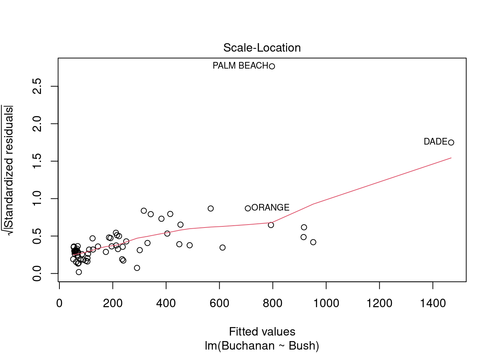

Code
library(tidyverse)
library(knitr)
library(alr4)
library(smss)
library(qpcR)Error in library(qpcR): there is no package called 'qpcR'Code
knitr::opts_chunk$set(echo = TRUE)library(tidyverse)
library(knitr)
library(alr4)
library(smss)
library(qpcR)Error in library(qpcR): there is no package called 'qpcR'knitr::opts_chunk$set(echo = TRUE)data(house.selling.price.2)
hp <- house.selling.price.2
hr <-lm(P ~., data=hp)
summary(hr)
Call:
lm(formula = P ~ ., data = hp)
Residuals:
Min 1Q Median 3Q Max
-36.212 -9.546 1.277 9.406 71.953
Coefficients:
Estimate Std. Error t value Pr(>|t|)
(Intercept) -41.795 12.104 -3.453 0.000855 ***
S 64.761 5.630 11.504 < 2e-16 ***
Be -2.766 3.960 -0.698 0.486763
Ba 19.203 5.650 3.399 0.001019 **
New 18.984 3.873 4.902 4.3e-06 ***
---
Signif. codes: 0 '***' 0.001 '**' 0.01 '*' 0.05 '.' 0.1 ' ' 1
Residual standard error: 16.36 on 88 degrees of freedom
Multiple R-squared: 0.8689, Adjusted R-squared: 0.8629
F-statistic: 145.8 on 4 and 88 DF, p-value: < 2.2e-16For backward elimination, the beds variable would be deleted first because it has the highest p-value.
For forward selection, the size variable would be added first because it has the smallest p-value and is the most significant term to the model.
Although number of beds is correlated to the price of the house, when other variables are included in the model, such as size and baths, beds becomes redundant. Multicollinearity might explain why beds is correlated to price, but has a small p-value in the regression.
#Create PRESS function
PRESS <- function(model) {
pr <- residuals(model)/(1-lm.influence(model)$hat)
PRESS <- sum(pr^2)
return(PRESS)}
#Create models
mod1 <- lm(P ~ S, data=hp)
mod2 <- lm(P ~ S + New, data=hp)
mod3 <- lm(P ~ S + New + Ba, data=hp)
mod4 <- lm(P ~ S + New + Ba + Be, data=hp)
mod5 <- lm(P~ ., data=hp)#Testing model 1
summary(mod1)
Call:
lm(formula = P ~ S, data = hp)
Residuals:
Min 1Q Median 3Q Max
-56.407 -10.656 2.126 11.412 85.091
Coefficients:
Estimate Std. Error t value Pr(>|t|)
(Intercept) -25.194 6.688 -3.767 0.000293 ***
S 75.607 3.865 19.561 < 2e-16 ***
---
Signif. codes: 0 '***' 0.001 '**' 0.01 '*' 0.05 '.' 0.1 ' ' 1
Residual standard error: 19.47 on 91 degrees of freedom
Multiple R-squared: 0.8079, Adjusted R-squared: 0.8058
F-statistic: 382.6 on 1 and 91 DF, p-value: < 2.2e-16print(paste("The PRESS for size model is", PRESS(mod1)))[1] "The PRESS for size model is 38203.2931280083"print(paste("The AIC for size model is", AIC(mod1)))[1] "The AIC for size model is 820.143919694945"print(paste("The BIC for size model is", BIC(mod1)))[1] "The BIC for size model is 827.741718174405"The model including only size on price has an R2 of 0.808, and adjusted R2 of 0.806, a PRESS of 38203.29, an AIC of 820.14, and a BIC of 827.74.
#Testing model 2
summary(mod2)
Call:
lm(formula = P ~ S + New, data = hp)
Residuals:
Min 1Q Median 3Q Max
-47.207 -9.763 -0.091 9.984 76.405
Coefficients:
Estimate Std. Error t value Pr(>|t|)
(Intercept) -26.089 5.977 -4.365 3.39e-05 ***
S 72.575 3.508 20.690 < 2e-16 ***
New 19.587 3.995 4.903 4.16e-06 ***
---
Signif. codes: 0 '***' 0.001 '**' 0.01 '*' 0.05 '.' 0.1 ' ' 1
Residual standard error: 17.4 on 90 degrees of freedom
Multiple R-squared: 0.8484, Adjusted R-squared: 0.845
F-statistic: 251.8 on 2 and 90 DF, p-value: < 2.2e-16print(paste("The PRESS for size model is", PRESS(mod2)))[1] "The PRESS for size model is 31065.9960018156"print(paste("The AIC for size model is", AIC(mod2)))[1] "The AIC for size model is 800.12623573568"print(paste("The BIC for size model is", BIC(mod2)))[1] "The BIC for size model is 810.256633708293"The model including size and new on price has an R2 of 0.848, and adjusted R2 of 0.845, a PRESS of 31066, an AIC of 800.13, and a BIC of 810.26.
#Testing model 3
summary(mod3)
Call:
lm(formula = P ~ S + New + Ba, data = hp)
Residuals:
Min 1Q Median 3Q Max
-34.804 -9.496 0.917 7.931 73.338
Coefficients:
Estimate Std. Error t value Pr(>|t|)
(Intercept) -47.992 8.209 -5.847 8.15e-08 ***
S 62.263 4.335 14.363 < 2e-16 ***
New 18.371 3.761 4.885 4.54e-06 ***
Ba 20.072 5.495 3.653 0.000438 ***
---
Signif. codes: 0 '***' 0.001 '**' 0.01 '*' 0.05 '.' 0.1 ' ' 1
Residual standard error: 16.31 on 89 degrees of freedom
Multiple R-squared: 0.8681, Adjusted R-squared: 0.8637
F-statistic: 195.3 on 3 and 89 DF, p-value: < 2.2e-16print(paste("The PRESS for size model is", PRESS(mod3)))[1] "The PRESS for size model is 27860.0501502048"print(paste("The AIC for size model is", AIC(mod3)))[1] "The AIC for size model is 789.136597453738"print(paste("The BIC for size model is", BIC(mod3)))[1] "The BIC for size model is 801.799594919504"The model including size, new, and baths on price has an R2 of 0.868, and adjusted R2 of 0.863, a PRESS of 27860.05, an AIC of 789.14, and a BIC of 801.80.
#Testing model 4
summary(mod4)
Call:
lm(formula = P ~ S + New + Ba + Be, data = hp)
Residuals:
Min 1Q Median 3Q Max
-36.212 -9.546 1.277 9.406 71.953
Coefficients:
Estimate Std. Error t value Pr(>|t|)
(Intercept) -41.795 12.104 -3.453 0.000855 ***
S 64.761 5.630 11.504 < 2e-16 ***
New 18.984 3.873 4.902 4.3e-06 ***
Ba 19.203 5.650 3.399 0.001019 **
Be -2.766 3.960 -0.698 0.486763
---
Signif. codes: 0 '***' 0.001 '**' 0.01 '*' 0.05 '.' 0.1 ' ' 1
Residual standard error: 16.36 on 88 degrees of freedom
Multiple R-squared: 0.8689, Adjusted R-squared: 0.8629
F-statistic: 145.8 on 4 and 88 DF, p-value: < 2.2e-16print(paste("The PRESS for size model is", PRESS(mod4)))[1] "The PRESS for size model is 28390.223505035"print(paste("The AIC for size model is", AIC(mod4)))[1] "The AIC for size model is 790.622531490252"print(paste("The BIC for size model is", BIC(mod4)))[1] "The BIC for size model is 805.818128449172"The model including size, new, baths, and beds on price has an R2 of 0.869, and adjusted R2 of 0.863, a PRESS of 28390.22, an AIC of 790.62, and a BIC of 805.81
The models with the best R2 and adjusted R2 are model 3 (size, new, and baths) and model 4 (size, new, baths, and beds)
The model with the best PRESS value, AIC, and BIC is model 3 (size, new, and baths).
#Read in data
data(trees)
tree <- trees
head(tree) Girth Height Volume
1 8.3 70 10.3
2 8.6 65 10.3
3 8.8 63 10.2
4 10.5 72 16.4
5 10.7 81 18.8
6 10.8 83 19.7#Create model
mod_tree_1 <- lm(Volume ~ Girth + Height, data=tree)
summary(mod_tree_1)
Call:
lm(formula = Volume ~ Girth + Height, data = tree)
Residuals:
Min 1Q Median 3Q Max
-6.4065 -2.6493 -0.2876 2.2003 8.4847
Coefficients:
Estimate Std. Error t value Pr(>|t|)
(Intercept) -57.9877 8.6382 -6.713 2.75e-07 ***
Girth 4.7082 0.2643 17.816 < 2e-16 ***
Height 0.3393 0.1302 2.607 0.0145 *
---
Signif. codes: 0 '***' 0.001 '**' 0.01 '*' 0.05 '.' 0.1 ' ' 1
Residual standard error: 3.882 on 28 degrees of freedom
Multiple R-squared: 0.948, Adjusted R-squared: 0.9442
F-statistic: 255 on 2 and 28 DF, p-value: < 2.2e-16#Plot modeal diagnostics
plot(mod_tree_1)

The residuals vs. fitted plot shows the data is non-linear. The normal Q-Q shows the residuals have a close-to-normal distribution. The points on the scale-location show a non-random pattern, where residuals are not spread equally along the range of predictors. The assumption of homoscedasticity may be violated. The residuals vs. leverage plot shows an influential observations at point 31, beyond Cook’s distance. Finding that point on all other plots, it appears to be an outlier in all cases.
The diagnostic plots show that 2 assumptions may be violated: linearity and homocedasticity of errors.
#Read in data
data("florida")
fl <- florida
#Create model
fl_mod <- lm(Buchanan ~ Bush, data=fl)
summary(fl_mod)
Call:
lm(formula = Buchanan ~ Bush, data = fl)
Residuals:
Min 1Q Median 3Q Max
-907.50 -46.10 -29.19 12.26 2610.19
Coefficients:
Estimate Std. Error t value Pr(>|t|)
(Intercept) 4.529e+01 5.448e+01 0.831 0.409
Bush 4.917e-03 7.644e-04 6.432 1.73e-08 ***
---
Signif. codes: 0 '***' 0.001 '**' 0.01 '*' 0.05 '.' 0.1 ' ' 1
Residual standard error: 353.9 on 65 degrees of freedom
Multiple R-squared: 0.3889, Adjusted R-squared: 0.3795
F-statistic: 41.37 on 1 and 65 DF, p-value: 1.727e-08#Plot model diagnostics
plot(fl_mod)

Palm Beach County is an outlier based on the residuals vs. leverage plot. It can also be observed on the residuals vs. fitted and Normal Q-Q plots. Looking at the raw data, that county has the highest votes for Buchanan and one of the highest for Bush.
#Create logistics model
fl_mod_log <- lm(log(Buchanan) ~ log(Bush), data=fl)
summary(fl_mod_log)
Call:
lm(formula = log(Buchanan) ~ log(Bush), data = fl)
Residuals:
Min 1Q Median 3Q Max
-0.96075 -0.25949 0.01282 0.23826 1.66564
Coefficients:
Estimate Std. Error t value Pr(>|t|)
(Intercept) -2.57712 0.38919 -6.622 8.04e-09 ***
log(Bush) 0.75772 0.03936 19.251 < 2e-16 ***
---
Signif. codes: 0 '***' 0.001 '**' 0.01 '*' 0.05 '.' 0.1 ' ' 1
Residual standard error: 0.4673 on 65 degrees of freedom
Multiple R-squared: 0.8508, Adjusted R-squared: 0.8485
F-statistic: 370.6 on 1 and 65 DF, p-value: < 2.2e-16#Plot the log model
plot(fl_mod_log)


The model does now meet the linear regression model assumptions. Palm Beach still has a non-normal residual. However, it is not outside of Cook’s distance, suggesting it’s influence is decreased in this model.